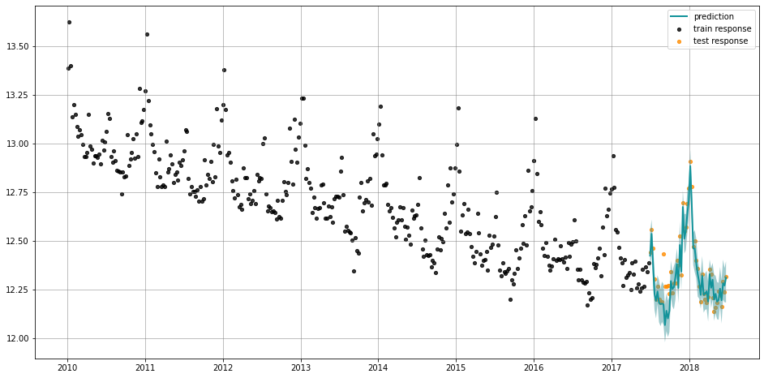

Pyro in Orbit¶
Pyro is a flexible, scalable deep probabilistic programming library built on PyTorch. Pyro was originally developed at Uber AI and is now actively maintained by community contributors.
Just like Stan, our package also supports Pyro as the underlying inference engine.
Here we use examples to illustrate how to use Pyro to instantiate and estimate an LGT model.
[2]:
import pandas as pd
import numpy as np
from orbit.models.lgt import LGTMAP, LGTAggregated, LGTFull
from orbit.estimators.pyro_estimator import PyroEstimatorVI, PyroEstimatorMAP
from orbit.diagnostics.plot import plot_predicted_data
from orbit.diagnostics.plot import plot_predicted_components
from orbit.utils.dataset import load_iclaims
[4]:
pd.set_option('display.float_format', lambda x: '%.5f' % x)
Data¶
[5]:
df = load_iclaims()
df["claims"] = np.log(df["claims"])
[6]:
test_size=52
train_df=df[:-test_size]
test_df=df[-test_size:]
MAP Fit and Predict¶
To use Pyro as the inference engine, one needs to specify the estimator_type as PyroEstimatorMAP or PyroEstimatorVI.
[7]:
lgt_map = LGTMAP(
response_col="claims",
date_col="week",
seasonality=52,
seed=8888,
estimator_type=PyroEstimatorMAP,
)
[8]:
%%time
lgt_map.fit(df=train_df)
CPU times: user 9.88 s, sys: 130 ms, total: 10 s
Wall time: 10 s
[9]:
predicted_df = lgt_map.predict(df=test_df)
plot_predicted_data(training_actual_df=train_df, predicted_df=predicted_df,
date_col=lgt_map.date_col, actual_col=lgt_map.response_col,
test_actual_df=test_df)

VI Fit and Predict¶
Pyro only support Variational Inference(SVI) for full sampling prediction. Note that pyro takes advantage of parallel processing in vi and hence result in similar computation time compared to map.
[10]:
lgt_vi = LGTFull(
response_col='claims',
date_col='week',
seasonality=52,
seed=8888,
num_steps=101,
num_sample=100,
learning_rate=0.1,
n_bootstrap_draws=-1,
estimator_type=PyroEstimatorVI,
)
[11]:
%%time
lgt_vi.fit(df=train_df)
INFO:root:Guessed max_plate_nesting = 2
CPU times: user 11.8 s, sys: 244 ms, total: 12 s
Wall time: 12.1 s
[12]:
predicted_df = lgt_vi.predict(df=test_df)
[13]:
plot_predicted_data(training_actual_df=train_df, predicted_df=predicted_df,
date_col=lgt_vi.date_col, actual_col=lgt_vi.response_col,
test_actual_df=test_df)
